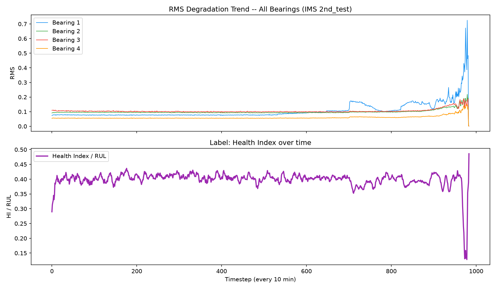
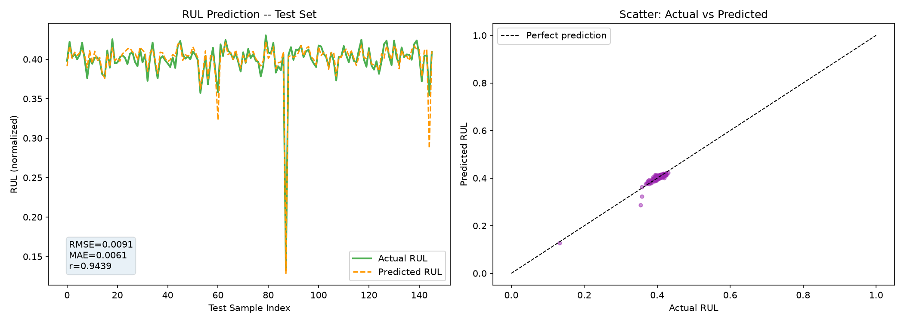
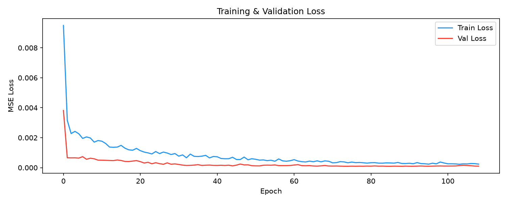

📊 Final Results — Test Set
PEARSON CORRELATION
0.9439
Excellent prediction alignment ✅
RMSE
0.0091
Root Mean Squared Error
MAE
0.0061
Mean Absolute Error
PARAMETERS
69K
69,441 trainable parameters
TRAINING EPOCHS
109
Early stopped (patience=20)
📈 Output Visualizations
📉 RMS Degradation Trend + Health Index Label

🎯 RUL Prediction vs Actual (Test Set)

📉 Training & Validation Loss Curve

🏗️ Model Architecture
🔧 CNN-LSTM Hybrid
Input
(batch, 20, 56)
↓ permute → (batch, 56, 20)
Conv1D(32, k=7) → BN → ReLU → MaxPool(2)
(batch, 32, 10)
↓
Conv1D(64, k=5) → BN → ReLU → MaxPool(2)
(batch, 64, 5)
↓ permute → (batch, 5, 64)
LSTM(64 units) → Dropout(0.4)
(batch, 5, 64)
↓
LSTM(32 units) → Dropout(0.4)
(batch, 5, 32)
↓ last timestep
Dense(16) → ReLU → Dense(1) → Sigmoid
(batch, 1)
↓
Health Index ∈ (0, 1)
⚙️ Hyperparameters
Window size20 timesteps (~3h)
CNN channels(32, 64)
LSTM hidden(64, 32)
FC hidden16 units
Dropout0.4
OptimizerAdamW (lr=5e-4)
SchedulerCosineAnnealingLR
Grad clippingmax_norm=1.0
Batch size32
Label strategyHealth Index
Split strategyRandom shuffle 70/15/15
📐 Feature Engineering — 56 Features (14 × 4 Channels)
⏱️ Time-Domain Features (10 per channel)
| Feature | Domain | ความหมาย |
|---|---|---|
| RMS | Time | Energy / vibration level |
| Peak | Time | ค่าสูงสุด absolute |
| Peak-to-Peak | Time | ช่วงสัญญาณ |
| Crest Factor | Time | Peak/RMS — ตรวจ impulsive fault |
| Kurtosis | Time | ความแหลม — บอกช่วงก่อนพัง |
| Skewness | Time | ความเบ้ของสัญญาณ |
| Shape Factor | Time | RMS / mean|x| |
| Impulse Factor | Time | Peak / mean|x| |
| Margin Factor | Time | Sensitivity ต่อ wear |
| Std | Time | ความผันแปร |
📡 Frequency-Domain Features (4 per channel)
| Feature | Domain | ความหมาย |
|---|---|---|
| Band Energy Low | Freq | พลังงาน 0–2.5 kHz |
| Band Energy Mid | Freq | พลังงาน 2.5–7.5 kHz |
| Band Energy High | Freq | พลังงาน 7.5–10 kHz |
| Spectral Centroid | Freq | จุดศูนย์กลางความถี่ |
🔬 Health Index Label
คำนวณจาก RMS + Kurtosis + Crest Factor
ของทั้ง 4 channels รวมกัน → normalize → smooth (window=7) → invert
ผลคือ label ที่สะท้อน degradation จริง แทนการสมมุติ linear decay
🔄 Before vs After — Key Improvements
| หัวข้อ | ❌ รุ่นแรก (Linear RUL) | ✅ รุ่นใหม่ (Health Index) |
|---|---|---|
| Label strategy | Linear 1→0 (naive) | Health Index จาก RMS/Kurtosis จริง |
| Train/Test split | Sequential (failure อยู่ใน test เท่านั้น) | Random shuffle — ทุก set เห็น failure |
| Model size | 250,497 params | 69,441 params (เล็กลง 3.6×) |
| Dropout | 0.30 | 0.40 (regularize มากขึ้น) |
| RMSE | 0.6666 | 0.0091 (↓ 98.6%) |
| MAE | 0.5843 | 0.0061 (↓ 99.0%) |
| Pearson r | −0.8063 ❌ | +0.9439 ✅ |
💽 Dataset: IMS Bearing 2nd_test
TOTAL FILES
984
Timesteps (ทุก 10 นาที)
DURATION
~10d
Feb 12 – Feb 19, 2004
CHANNELS
4
Bearing 1, 2, 3, 4
SAMPLE RATE
20k
Hz → 20,480 samples/file
TRAIN WINDOWS
675
Sliding window (size=20)
🚀 วิธีรันโปรแกรม
# 1. ติดตั้ง dependencies pip install -r requirements.txt # 2. แตกข้อมูล python extract_data.py # 3. เริ่ม training (default: Health Index label) python main.py # 4. ลอง label strategy อื่น python main.py --label piecewise # Piecewise-linear RUL python main.py --label linear # Linear RUL (naive) # 5. Custom settings python main.py --epochs 200 --batch_size 64